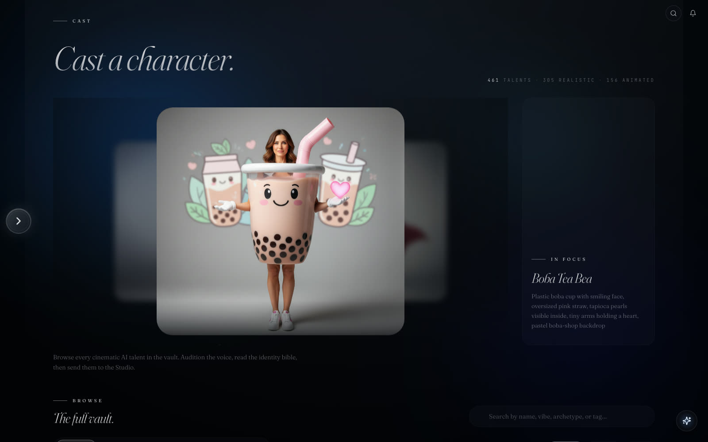
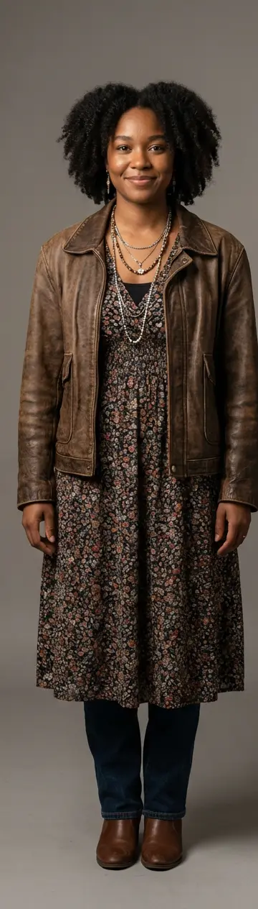

126 performance-ready identities

Casting house · Identity continuity
Characters with somewhere to go.
Discover performance-ready identities, hear their voices, understand their worlds, and assemble a cast that remains coherent from the first frame to the final cut.
Featured ensemble
